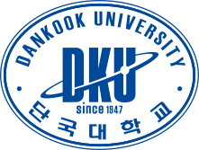

경기도 용인시 수지구와 충청남도 천안시 동남구에 있는 사립 종합대학교. 단국대학교는 1945년 해방 후 새 나라에 새 민족 대학을 설립하고자 원했던 대한민국 임시정부와 백범 김구 선생의 뜻에 따라, 독립운동가인 범정 장형 선생과 혜당 조희재 선생이 1947년 함께 설립한 대학으로 해방 이후 최초로 세워진 4년제 대학교이다. 단국이란 교명 역시 백범 김구 선생의 뜻이 그대로 반영된 것이다.[4] 본래 서울특별시 용산구 한남동에 위치해 있었으나 2007년도 용인 수지로 캠퍼스 이전을 했다.
단국대학교 죽전캠퍼스와 천안캠퍼스는 이원화 캠퍼스이며, 죽전캠퍼스는 IT(정보통신)와 CT(문화콘텐츠)학문 분야로, 천안캠퍼스는 의대·치대·약대를 바탕으로 한 BT(생명과학)와 FL(외국어)학문 분야로 운영되고 있다. 단국대학교를 운영하는 학교법인 단국대학은 단국대학교 사범대학 부속으로 서울특별시 강남구 대치동에 있는 단국대학교사범대학부속중학교, 단국대학교사범대학부속고등학교, 단국대학교부속소프트웨어고등학교를 함께 운영 중이다